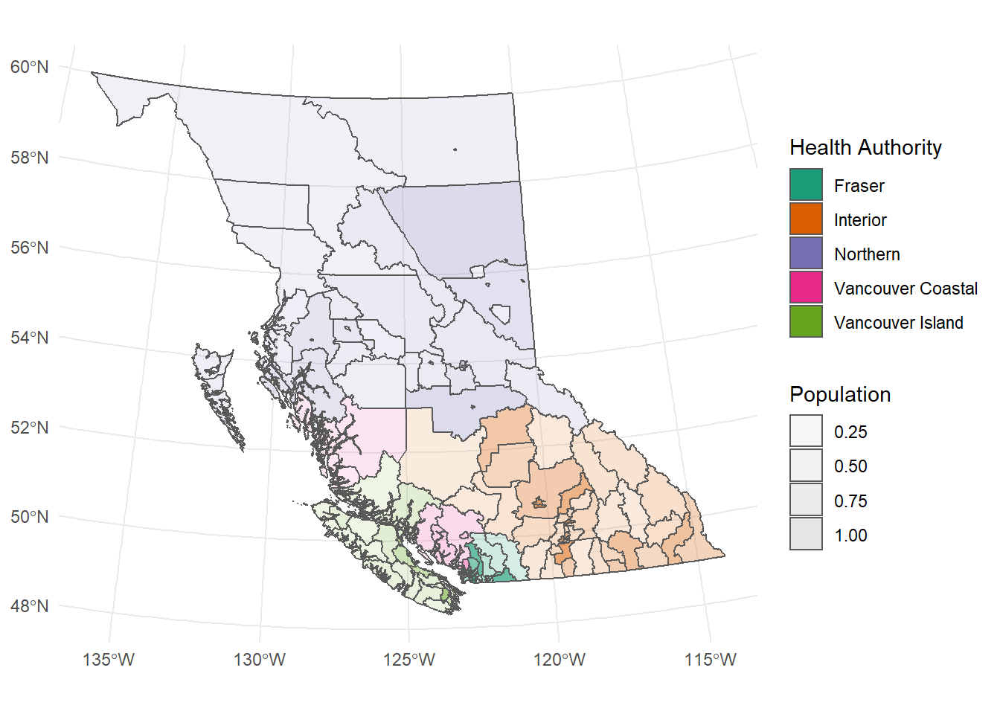
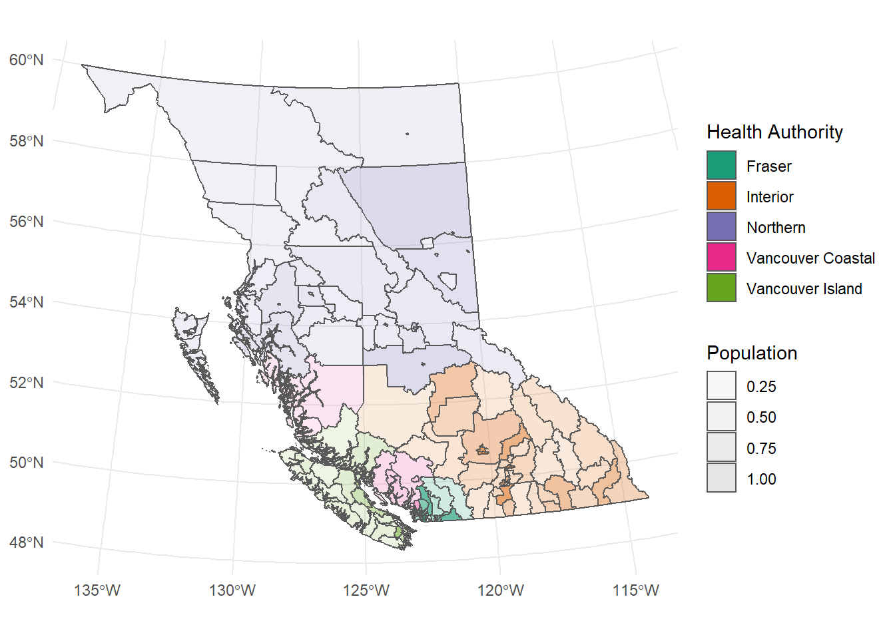

Code
ggplot(chsa) +
geom_sf(aes(fill = HA_Name, alpha = CHSA_Pop16 / max(CHSA_Pop16))) +
theme_minimal() +
labs(fill = 'Health Authority', alpha = 'Population') +
scale_fill_brewer(palette = 'Dark2')
ggplot(chsa) +
geom_sf(aes(fill = HA_Name, alpha = CHSA_Pop16 / max(CHSA_Pop16))) +
theme_minimal() +
labs(fill = 'Health Authority', alpha = 'Population') +
scale_fill_brewer(palette = 'Dark2')
# ### data prep
#
# # remove extra row for surrey memorial pediatric unit
# hosp <- hosp %>% group_by(Facility) %>% slice(1) %>% ungroup()
# # labels for leaflet mapping
# hosp.labs <- sprintf("%s", hosp$Facility) %>% lapply(htmltools::HTML)
# # transform -- note the map projection, this could cause problems if not changed
# chsa <- st_transform(chsa, crs = 'WGS84')
# # add leaflet colour palette based on health authority
# chsa.pal <- colorFactor('RdYlBu', chsa$HA_ID)
# # labels leaflet for mapping
# chsa.labels <- sprintf("%s (%s)", chsa$CHSA_Title, chsa$HA_Name) %>% lapply(htmltools::HTML)
#
# ### plot CHSA shapes plus hospital coordinates
# # generate map
# leaflet() %>%
# addTiles() %>% addProviderTiles(providers$CartoDB.Positron) %>%
# addPolygons(data = chsa,
# fillColor = ~chsa.pal(HA_ID),
# stroke = T, weight = 1,
# opacity = 10, color = "#666", dashArray = "1", fillOpacity = 0.1,
# label = chsa.labels,
# highlight = highlightOptions(
# weight = 1.5, color = "black", dashArray = "",fillOpacity = 0.3,
# bringToFront = F)
# ) %>%
# ## add circles after polygons so that they are plotted on top
# addCircles(data = hosp, ~LONGITUDE, ~LATITUDE,
# label = ~hosp.labs, popup = ~hosp.labs,
# opacity = 1, radius = 10, stroke = T,
# highlightOptions = highlightOptions(bringToFront = T)
# )# # correlations - dist v. dur, dist v. CHSA pop/area
# distances %>%
# select(HA_Name, duration, distance, dist.hav, CHSA_Pop16, CHSA_Area) %>%
# mutate(CHSA_dens = CHSA_Pop16 / CHSA_Area) %>%
# ggpairs(columns = 2:7, mapping = aes(color = HA_Name),
# diag = list(continuous = wrap('densityDiag', alpha = 0.3)),
# lower = list(continuous = wrap("smooth", alpha = 0.3, size = 0.1, se = F)))# distances %>%
# select(CHSA_Name, Facility, distance, duration, HA_Name, CHSA_UR_Cl) %>%
# datatable(., filter = 'top')---
title: "CHSA"
editor_options:
chunk_output_type: console
execute:
cache: true
---
```{r}
#| label: load-packages-and-data
#| include: false
### load packages
pacman::p_load(plyr, tidyverse, sf, leaflet, fontawesome, GGally, DT)
### load CHSA data from outside of project directory
# hospitals
# hosp <- read_csv('../../Virtual Health/RTVS analysis/Mapping/Hospitals/hlbc_emergencyrooms.csv')
# chsa geometry
chsa <- st_read('data/CHSA_2018/CHSA_2018.shp')
# road distances previously calculated
# distances <- read_rds('../../Virtual Health/RTVS analysis/Mapping/CHSA-to-Hosp-distances.RDS')
```
## Base Map
```{r}
#| label: fig-ggplotmap
#| fig-cap: CHSA base map using ggplot
ggplot(chsa) +
geom_sf(aes(fill = HA_Name, alpha = CHSA_Pop16 / max(CHSA_Pop16))) +
theme_minimal() +
labs(fill = 'Health Authority', alpha = 'Population') +
scale_fill_brewer(palette = 'Dark2')
```
## Interactive Map
```{r}
#| label: fig-leaflet
#| fig-cap: CHSA and hospital map
#| warning: false
# ### data prep
#
# # remove extra row for surrey memorial pediatric unit
# hosp <- hosp %>% group_by(Facility) %>% slice(1) %>% ungroup()
# # labels for leaflet mapping
# hosp.labs <- sprintf("%s", hosp$Facility) %>% lapply(htmltools::HTML)
# # transform -- note the map projection, this could cause problems if not changed
# chsa <- st_transform(chsa, crs = 'WGS84')
# # add leaflet colour palette based on health authority
# chsa.pal <- colorFactor('RdYlBu', chsa$HA_ID)
# # labels leaflet for mapping
# chsa.labels <- sprintf("%s (%s)", chsa$CHSA_Title, chsa$HA_Name) %>% lapply(htmltools::HTML)
#
# ### plot CHSA shapes plus hospital coordinates
# # generate map
# leaflet() %>%
# addTiles() %>% addProviderTiles(providers$CartoDB.Positron) %>%
# addPolygons(data = chsa,
# fillColor = ~chsa.pal(HA_ID),
# stroke = T, weight = 1,
# opacity = 10, color = "#666", dashArray = "1", fillOpacity = 0.1,
# label = chsa.labels,
# highlight = highlightOptions(
# weight = 1.5, color = "black", dashArray = "",fillOpacity = 0.3,
# bringToFront = F)
# ) %>%
# ## add circles after polygons so that they are plotted on top
# addCircles(data = hosp, ~LONGITUDE, ~LATITUDE,
# label = ~hosp.labs, popup = ~hosp.labs,
# opacity = 1, radius = 10, stroke = T,
# highlightOptions = highlightOptions(bringToFront = T)
# )
```
## CHSA Distance Correlations
```{r}
#| label: fig-correlations
#| fig-cap: Correlations between distance and CHSA characteristics
#| warning: false
# # correlations - dist v. dur, dist v. CHSA pop/area
# distances %>%
# select(HA_Name, duration, distance, dist.hav, CHSA_Pop16, CHSA_Area) %>%
# mutate(CHSA_dens = CHSA_Pop16 / CHSA_Area) %>%
# ggpairs(columns = 2:7, mapping = aes(color = HA_Name),
# diag = list(continuous = wrap('densityDiag', alpha = 0.3)),
# lower = list(continuous = wrap("smooth", alpha = 0.3, size = 0.1, se = F)))
```
## Table
```{r}
#| label: datatable
#| warning: false
# distances %>%
# select(CHSA_Name, Facility, distance, duration, HA_Name, CHSA_UR_Cl) %>%
# datatable(., filter = 'top')
```